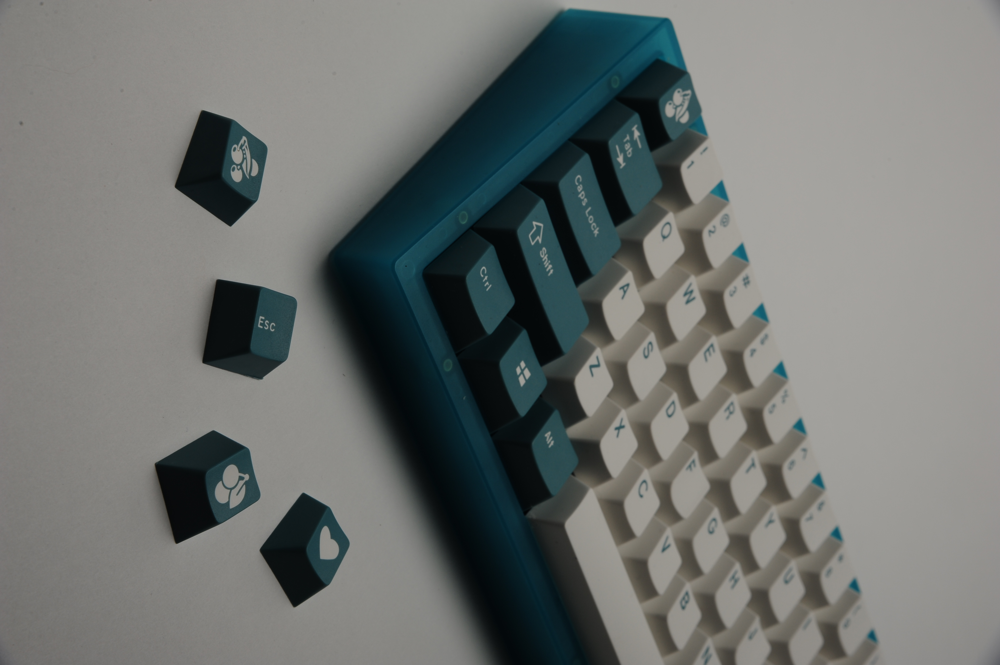
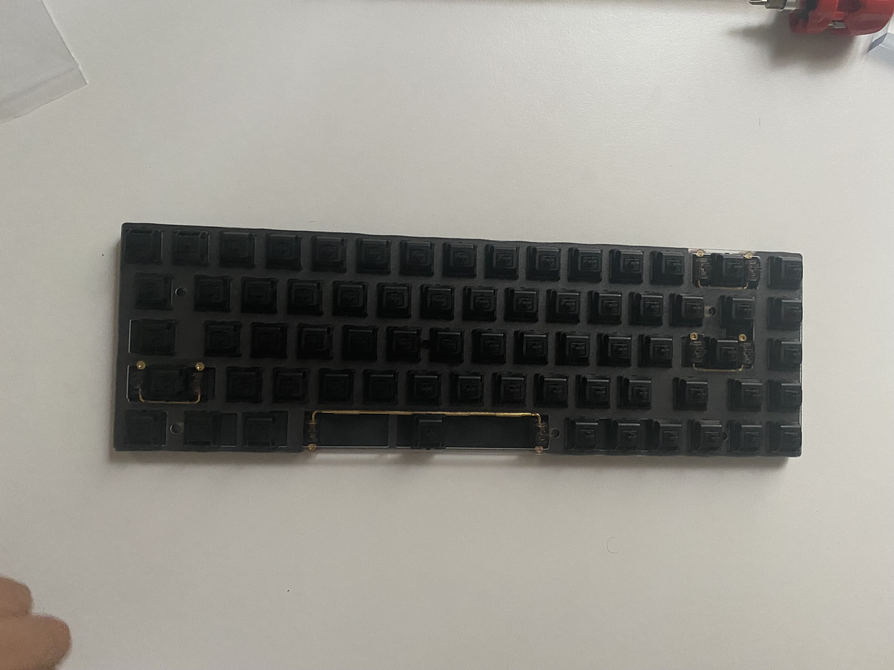
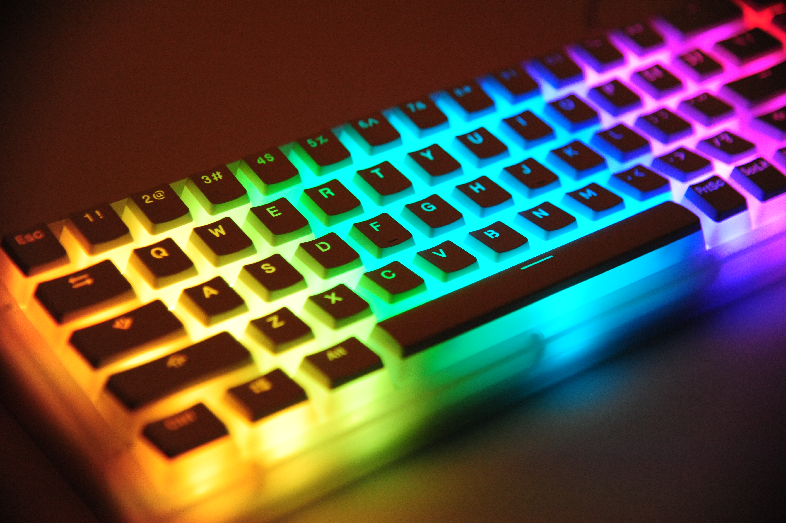
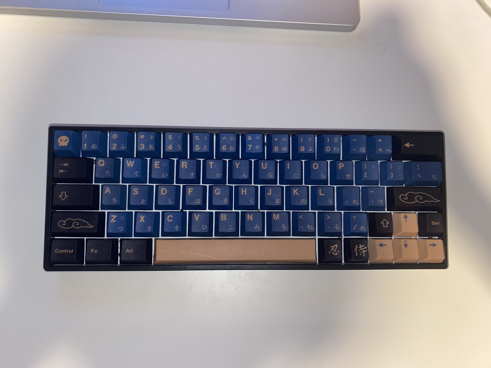
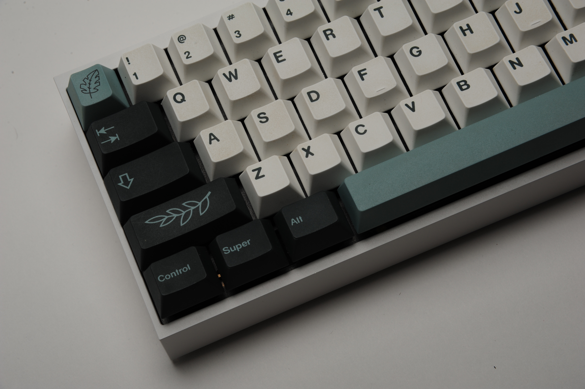
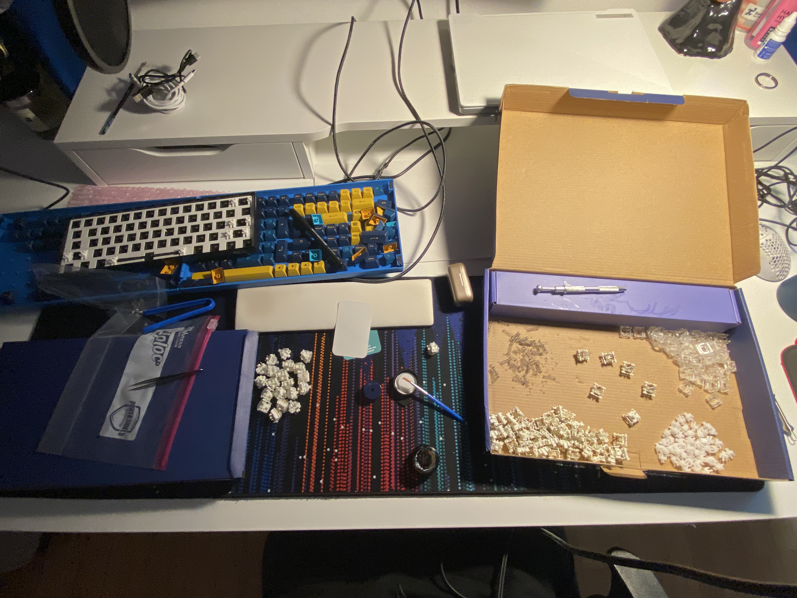
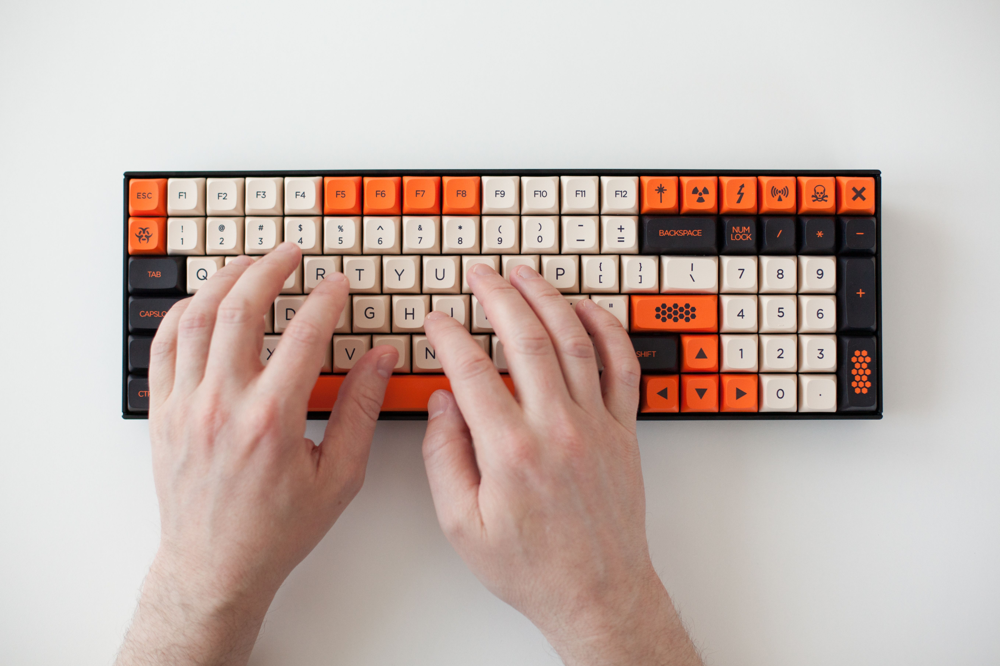
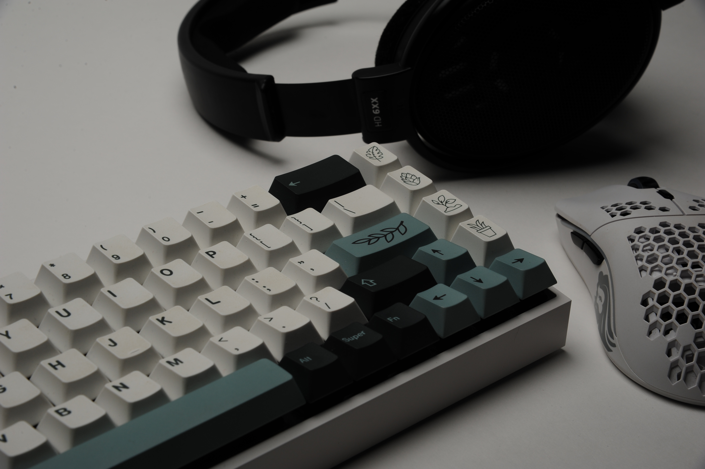

"I'm convinced that about half of what separates successful entrepreneurs from the non-successful ones is pure perseverance." — Steve Jobs

Motivated by a desire to make the keyboard accessible to those with limited finger mobility after volunteering at a senior home, I taught myself how to use Fusion 360 to prototype 3D-printed cases and plates. However, they sounded scratchy and hollow. To fix this, I learned about engineering concepts like damping and resonance control, and modified these parameters in order to minimize structural noise and pinging. Realising I was now capable of manufacturing a large part of the keyboard for a fraction of the cost, I used online courses to teach myself how to solder and code to create macro-shortcuts and reduce costs for the keyboard.

I then scaled the process and made it more efficient, allowing me to sell fully customised keyboards (including anthropometrically designed cases, customised for elderly people) at a significantly lower price point than what was common (50 euros vs 500+ for the same degree of customization). This project helped me develop CAD, Design, Business, and Engineering skills that I hope to further refine at college.
Making the keyboards was initially a painstaking process: I had to take apart each switch, tune and lubricate it to meet my quality standards, then troubleshoot bent pins and bad connections. As I made more and more, I streamlined my process, cutting out commercial parts, developing systems and tools to tune and dampen switches faster, and building more and more of the parts in-house.




By the end, the only parts I had to buy externally were the Microcontroller (Pro Micro ~€5 or the nice! Nano for ~€25 for bluetooth boards), and the switches, which ranged from €5 to €30 depending on how premium the board needed to sound, and keycaps (entirely variable depending on aesthetics). From there, I set up custom keymaps for each client and mapped them onto the pro micro, allowing them to set up key layering and macro shortcuts, reducing the distance that their fingers needed to travel.


Though I ended up selling around €1000 worth of keyboards, I was unable to take this to scale, primarily due to my age and related constraints in setting up a viable business. All of the processes I've developed benefit immensely from economies of scale. I would like to expand and refine this business model to manufacture affordable keyboards for the elderly and hope that college, where I'll have access to makerspaces and startup competitions on campus, will allow me to do so.